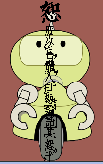
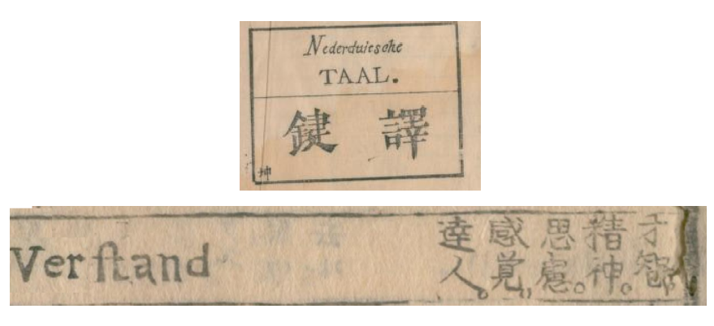
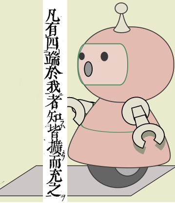

683: '痛みをおぼえる'事件 - Emotional Path in Robot Brain?¶
依頼人¶
私立高校教員。
依頼内容¶
{kind=link}
伊藤仁斎が好きで、毎年の倫理の授業で少しながながと「
考えてみると、「惻隠の心」は生得的なものだということで間違いないのか、自分自身のなかで迷いが深まっているように思う。
調査報告¶
目次
灰白質中に在り¶
第一章 智識の元素(感覚)
第一節 感覚の定義
（前略）此章ニ於テ智識ノ元素トシテ論ゼントスル所ノモノハ実ニ此感覚ニ在リ
今試ニ其定義ヲ下サバ感覚トハ身体ノ在部分ヲ経テ心中ニ起レル意識ナリ
更ニ詳言スレハ物質的刺戟ニ由リ感覚神経ノ末端ニ起レル感動ヲ因トシテ
脳中ニ傳達シタル神経感觸ト精神作用ノ働キトヨリ生ズル単純ノ意識也
サレハ感覚ニハ二個ノ必要ナルモノアリ其一ヲ刺戟トシ其ニヲ精神作用トス
此二者中若シ其一ヲ欠カバ決シテ感覚ヲ生ズルコト ナシ
哲學舘第十一學年度高等教育學科講義録, 澤柳政太郎 講義
文学士澤柳政太郎、本田信教共著「心理学」が文学社から出版されたのが明治23[1890]年なので、この講義録はその少し前のものか。哲學舘は東洋大学の前身の専修学校である。
「感覚」という日本語が今日のような意味で使われるようになったのは、いつ頃なのだろうか。「精選版日本国語大辞典」では、「一八世紀末、江戸の蘭学者による造語か」といい、1810年刊行の和蘭辞典「譯鍵」の"Verstand"の項を引用している 1 。
{kind=link}
しかし、"Verstand" 2 は英語の"sensibility"に対応していて、視覚、聴覚、触覚、嗅覚、味覚等の生理的な「感覚」よりも「感受性」というのが近い。だから、訳語のひとつ「達人」は「良くものの分かった人」という意味である。生理的な「感覚」を意味するオランダ語はむしろ"Gevoel"である。「痛みの感覚」("sense of pain", "sensation of pain")は、"gevoel van pijn"となる。
ところが、「譯鍵」では"Gevoel"は「識覚」となっている。そうしてみると、「感覚」の語が今日的な意味で使われるようになったのは、もっと後のことだろうか ( 「感覚」事始め )。
澤柳の「心理学」講義よりほぼ十年早い明治14[1881]年には、宇田川準一編述の「小学生理訓蒙」が出版されている。同書は主に、Joseph C. Hutchisonの名著、"A Treatise on Physiology and Hygiene"(1872)に基づく。かなりの簡訳になっているが、このあたりで生理的な意味での「感覚」が定義されるようになる。
第九章 感覚
凡ソ感覚ノ中心ハ頭蓋中ニ存スル脳ノ礎底灰白質中ニ在ル者ニシテ通常五種ニ区分ス
即チ触覚味覚嗅覚視覚及ヒ聴覚ニシテ所謂五官ト称スル者是ナリ
蓋シ此五官ヲ主司スル神経ハ各異ニシテ各自特異ノ機能ヲ有スル
(中略)
又或人ノ説ニ従エハ五官ノ外更ニ温感覚及ヒ筋感覚ニ二者アリト
是レ触覚ト相似タルカ如シト雖モ其實自ラ異ナル所アリ
(中略)
疼痛ハ人身ニ危害ノ来迫ヲ教ヘ或ハ疾病ノ発セントスルヲ報シテ
体力及ヒ精神ノ使用ヲ斟酌セシメ
既ニ発病スルトキハ不断之ニ配意セシムル用ヲ為ス
(中略)
疼痛ノ功用至大ナリト云ハサル可ンヤ
宇田川準一編述、小学生理訓蒙、明治14年(1981)、同盟社
"sense", "sensation"を生理学的には、「神経ノ末端」で「感じ」、その信号を脳の「灰白質中に在る者」によって「
ロボット心理学者スーザン・カルビン¶
{kind=link}
ロボット三原則 (図をクリック)¶
アイザック・アシモフの"I, Robot"は、ロボット心理学者スーザン・カルビンの物語でもある。彼女はその生涯にわたって、代々のロボット製品がその技術発展史のなかでロボット三原則にどのように対応・適応していくのかを研究した。
スーザン・カルビンは1982年生、2003年に学士、2008年に博士を取得し、そのままU.S. Robot and Mechanical Man, Inc. (通称"U.S. Robots")に入社している。スーザンは人間よりロボットに親しいと噂されるほどで、どこか動物行動学者の テンプル・グランディン を思わせないでもない。
U.S. Robotsはスーザンの誕生年とおなじ1982年の設立である。同社のロボットは人間の脳ほどの大きさに収まるplatinumiridium製スポンジ状の中枢を持ち、その中ではポジトロンが信号伝達を担う。その「ポジトロン脳」の中で何が起きているのかは人間には理解できない。そして、U.S. Robots社の代々の製品は決して製作者の意図したとおりには動かない。だから、スーザン・カルビンの同社での役割があるのである。
一連の物語 3 の最初の話は1996年、ウェストン氏が娘のグロリアのために「子守ロボット」のロビーを買う。グロリアはロビーなしには片時もいられないほど、強い絆を持つようになる。しかし、ロビーは子供に心をもった存在と錯覚させるていどの製品のようにも見える。ウェストン夫人や近隣住民にとってロボットは機械にすぎず、いつか破壊的なふるまいをしないものでもないと恐れる。ウェストン氏はロビーが人間を害するようなことは決してない、それは 数学的に不可能 なようにできていると言う。だが、結局、夫人の執拗な抗議にまけて、ウェストン氏はロビーを返品してしまう。夫妻はグロリアにはロビーがいつのまにかいなくなってしまったと嘘をつく。グロリアは悲嘆し、いく先々でロビーの姿をさがしもとめる。この短編の最後のほうで、やっと再会したロビーが、とっさの判断でグロリアを危機から救う場面が描かれる。
この事件はスーザン・カルビンがU.S Robotsに入社するまえの出来事だったが、まだ学生だった彼女はニューヨークの博物館で偶然に、ロビーをさがしもとめる幼いグロリアを目撃している。そのときは気づかなかったものの、多分、スーザンの生涯を決定づける経験だった。
言うまでもなく、ロボットのポジトロン脳はロボット三原則に常時即応しなければならない。ロボットに要求される役割が高度化すればするほど、行為のたびにその結果を予測し、それが三原則に抵触しないかを確認して、適切に行動を修正する、あるいは停止するというのでは、おそらく間に合わない。
きずな¶
我々はひとの笑うところで笑い、ひとの涙を流すところで涙腺をゆるめる。同じところで同じように笑い、同じように涙を流すのは、これらの感情が群のなかの一員としての感情だからであって、脳がそれを自分の感情として認知することがなければ、いまのそれが誰の感情なのかも分からなくなってしまいかねない性質のものである。
他方、「痛み」は孤独な経験である。にもかかわらず、他人の痛みにわが心を痛めるという経験も日常普通のことととしてある。
「痛みを覚える」のは、脊椎動物、特に哺乳類で発達した感覚であるらしい。分娩を境に二つの個体にわかれた母子が分娩後も強い絆を保つ必要があるために、特殊な感覚領域が大脳に形成された。その領域の出す信号により、母は子に注意を注ぎ、子は母の注意を求める。こうして、母子分離の「痛み」が、「痛み」一般の基底を作った。また、その領域が共感にかかわる大脳皮質領域と密接に連携しているために、他者の「痛み」を我が事のように感じる基盤も形成された 4 。
{kind=link}
しかし、「痛み」の感覚が「絆」の形成に基礎を持っているため、他人の「痛み」を感じることには、笑いや涙を共有するのとくらべて、より「
哺乳類一般の「絆」には臭覚が重要な役割を持つ。一方、人間では「絆」の形成・確認は特定の感覚から独立しているので、母あるいは子のいずれかを代置させること（乳母、養父母、養子）も可能である。さらに、「絆」の形成が母子関係を超えた広がりを持つ。すなわち、人間は、決して強固なものとは言えないが、ゆるやかな「絆」の網の目を遠くひろげられる可能性を持っている 6 。
感情脳¶
グロリアがロビーに命を救われてから五年後、政府は地上でのロボットの使用を禁止し、ロビーも結局回収されてしまった。また、ロボット製造会社はロボットを販売することを禁止され、リースすることしか許されなくなった。
ロビー型のロボットは特定の個人との間に強い絆を持ってしまうため、子供が成長していき、対応すべき問題が社会的ひろがりを持つにつれて、いずれ三原則を遵守するのが不可能な事態に直面したであろう。グロリアもすでに15歳になっており、詳しくは書かれていないが、ロビーをとどめておくことの難しさをそれなりに理解できるようになっていたものと思われる。
以降、ロボット技術開発は、主に宇宙開発にかかわるプロジェクトの枠のなかで、人間社会からほとんど隔絶された環境で進められる。
実は、ロボット三原則の第三、「自己の存在を守らなければならない」がとても大切で、それがなければ、ロボットは第一則の意味を本当には理解することができない。あるいはまた、与えられた問において人間を害する以外の解がないとき、その瞬間にロボットの脳は破壊されてしまう。最悪の場合、
ロボットの声には恐怖があった。「そうするしかなかったんです！」
It was like the whistling of a piccolo many times magnified —
shrill and shriller till it keened with the terror of a lost soul
and filled the room with the piercingness of itself.
それは、ピッコロの音を幾倍にも拡大したようなものだった —
甲高さがどんどんましていき、ついには、失われた魂の恐怖がキーンと音を立て、
するどく突きさす感覚で室内に反響した。
("Liar" in "I, Robot".)
ロボットは「心」を破壊されて、「骨にて人を作りたてゝ、聲はわれたる笛を吹やうになん侍ると申されける。」 7 といった状態になって終わる。
そのような事態を避けるために、US. Robots社の製品のポジトロン脳には 感情脳回(emotional brain path) が組み込まれている 8 。ロボットは 適切に誘導されるなら 、自己の存在を守るために、人間を害するような答えに導く問そのものを回避することが期待される。しかし、最先端の、人間をはるかに上回る知能をもったロボットを適切に誘導する方法は、そのつど手探りで見出すしかない。スーザンの熟練をもってしても綱渡りのような緊張を強いられた。
しかし、スーザン・カルビンの退職時にはすでにそんな時代も過ぎていた。そのときまでに、ロボットは進化して"The Machine"となり、あらゆる人間と等距離を保ち、誰も害することのない答えを人間に提供しつづけることができる存在になっていた。それがこの果てしない物語の終わりと考えるのは楽天的にすぎるが。
2021年11月6日
報告書欄外メモ¶
報告書を依頼人に送ってから、依頼のすじにはほとんど答えていなかったことに気づいたが、その後依頼人からは何も言ってこないので良しとした。
- 1
Weblio辞書 の孫引き.
- 2
図で"f"のように見えるのは"s".
- 3
"I, Robot"はときどきのSF雑誌に掲載された短編を集め、そこにスーザン・カルビンが記者の取材を受ける序章を付け足して、ひとつの
枠物語 としたものである。それぞれの短編はロボットの技術発展史に沿うように並べられている。発表順とは異なる。1939年5月に書かれた"Robbie"が最初の短編であり、"I, Robot"でも序章の次に置かれる。Asimov Onlineの記事 [Pez] によれば、この最初のロボットものは当時ほぼすべてのSF誌で不採択となったという。しかし、ロボット三原則は"Robbie"を拒絶した"Astounding Science Fiction"誌の編集者John Campbellの協力で1941年に作られた。- 4
この箇所は文献 [Shirt09] , [Yam18] , [Lieb15] 等を参考にしているが、定説には必ずしも即していない。
- 5
「戦争と平和」のドロホフは、他人の間にある限りはほとんどサイコパスといっていいほど、他人の痛みにも自身の苦痛にも無感覚だが、母親や妹のように強い絆のあるところでは愛情にみちた息子であり兄である。能力は彼ほど卓越していなくても、ドロホフに似た人間はけっこういたるところにいるのではないか。
- 6
一方で、このゆるやかな網の目のひろがりは、ちょっとした環境変化で容易に、より強固な「絆」で結合された小さな場に分断されてしまう。人間には、危機に際して母胎への回帰、閉じられた空間で 配座の自由度(conformational freedom) を回復しようという本能がある。
- 7
猿蓑、晋其角序
- 8
"Escape!" in "I, Robot".
- Pez
Johnny Pez, History of the Positronic Robot and Foundation stories
- Shirt09
Shirtcliff EA, Vitacco MJ, Graf AR, Gostisha AJ, Merz JL, Zahn-Waxler C. Neurobiology of empathy and callousness: implications for the development of antisocial behavior. Behav Sci Law. 2009;27(2):137-171. doi:10.1002/bsl.862
- Yam18
Yam MF, Loh YC, Tan CS, Khadijah Adam S, Abdul Manan N, Basir R. General Pathways of Pain Sensation and the Major Neurotransmitters Involved in Pain Regulation. Int J Mol Sci. 2018 Jul 24;19(8):2164. doi: 10.3390/ijms19082164. PMID: 30042373; PMCID: PMC6121522.
- Lieb15
Lieberman MD, Eisenberger NI. The dorsal anterior cingulate cortex is selective for pain: Results from large-scale reverse inference. Proc Natl Acad Sci U S A. 2015;112(49):15250-15255. doi:10.1073/pnas.1515083112